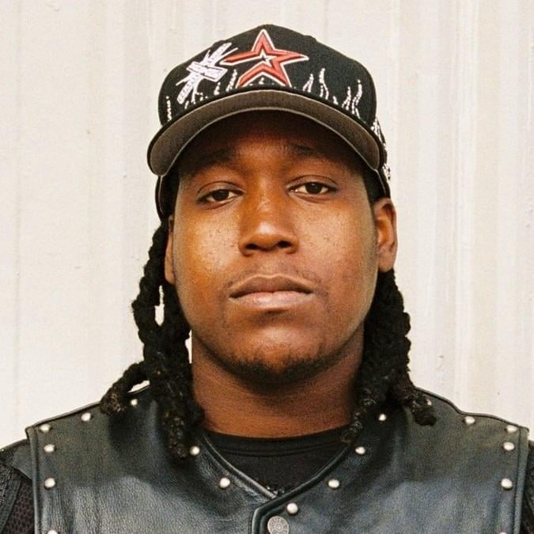

Don Toliver
Born: 12 June 1994
Age:
Years Active: 2015–present
Genre/s: Psychedelic rap, trap, R&B
Label/s: Cactus Jack, Atlantic, APG, Donnway & Co, We Run It
Caleb Zackary Toliver (born June 12, 1994), known professionally as Don Toliver, is an American rapper, singer, and songwriter. His debut mixtape, Donny Womack (2018), was released one day prior to fellow Houston rapper Travis Scott's album Astroworld, on which Toliver made a guest appearance. In the following week, he signed with Scott's record label, Cactus Jack Records, in a joint venture with Atlantic Records.
As a lead artist, he gained wider recognition with his 2019 single, "No Idea" and his 2020 single "After Party", both of which entered the Billboard Hot 100 and received triple platinum certifications by the Recording Industry Association of America (RIAA). Both songs first gained viral popularity on the video-hosting service TikTok, and preceded his debut studio album, Heaven or Hell (2020). A critical and commercial success, it peaked within the top ten of the Billboard 200 along with his second and third albums, Life of a Don (2021) and Love Sick (2023). He guest appeared alongside Nav and Gunna on Internet Money's 2020 single "Lemonade", which peaked within the top ten of the Billboard Hot 100.
His trap-centered fourth studio album, Hardstone Psycho (2024) peaked at number three on the Billboard 200 and was led by the top 40 single, "Bandit". His fifth studio album, Octane (2026) became his first number-one album and was supported by the singles "Tiramisu" and "ATM".

ATM
Don Toliver

Body
Don Toliver
E85
Don Toliver
Call Back
Don Toliver
Gemstone
Don Toliver
Excavator
Don Toliver
Opposite
Don Toliver
Tuition
Don Toliver
Long Way To Calabasas
Don Toliver
TMU
Don Toliver
Sweet Home
Don Toliver
Pleasure's Mine
Don Toliver

Tuition
Don Toliver

FWU
Don Toliver

Tiramisu
Don Toliver

New Drop
Don Toliver

No Pole
Don Toliver
Secondhand
Don Toliver Featuring Rema
K9
Don Toliver Featuring SahBabii
All The Signs
Don Toliver Featuring Teezo Touchdown
Rosary
Don Toliver Featuring Travis Scott
Rendezvous
Don Toliver Featuring Yeat

LV Bag
Don Toliver, j-hope, Pharrell Williams & Speedy